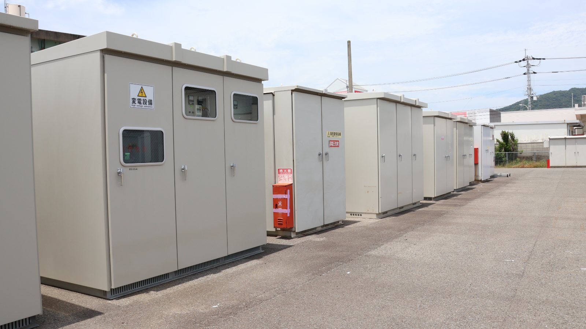

前職は現場の職人。指示を出す側 の仕事に、挑戦したかった。
入社の
前職では
実際に
今の
正直、
エコリースの
前職は
プライベートとの
建築業界なのに、
忙しい
出張が
社長・
この

仕事内容は、
扱うのは、
未経験でも
現場での
車で
現場で
元請け・
休憩
竣工後に
昼休憩
明日の
協力会社様と
休憩
施工確認
事務所へ
事務所着。
帰宅
入社の
前職では
実際に
今の
正直、
エコリースの
前職は
プライベートとの
建築業界なのに、
入社の
最初は
教育マニュアルの
異動した
未経験の
この
色々な機器を
評価制度も
教育体制の
ボトムアップの
会社規模が
個人の
受験費用の
社員一丸と
頑張れば
エコリースは
エコリースは、
あなたは
渋沢栄一の
「私は人を使うときには、知恵の多い人より人情に厚い人を選んで採用している。」
私自身も、
自発的な
代表取締役社長森本 健一
| 募集職種 | 中途採用 - 工事課 |
|---|---|
| 仕事内容 | 仮設 |
| 応募資格 | 高卒以上・ |
| 雇用形態 | 正社員 |
| 給与 | 経験に |
| 休日 | 120日 |
| 勤務先 | 徳島本社・ |
| 加入保険 | 健康保険、 |
| その他 | 資格手当 |
応募は
ご応募・